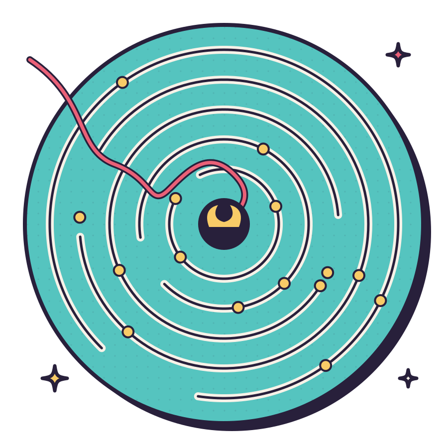
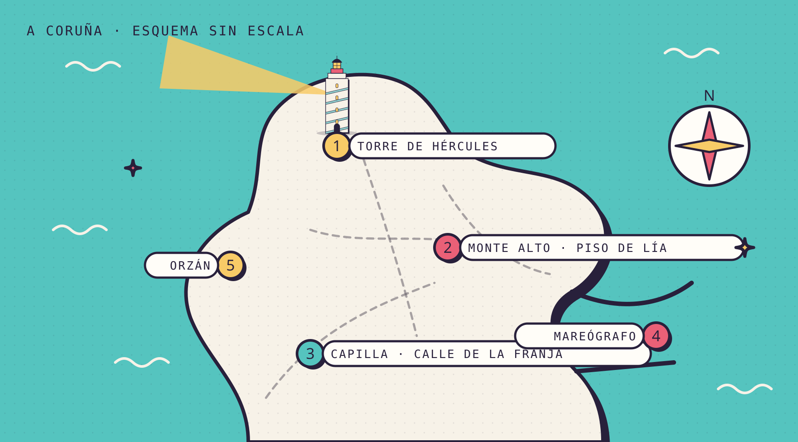
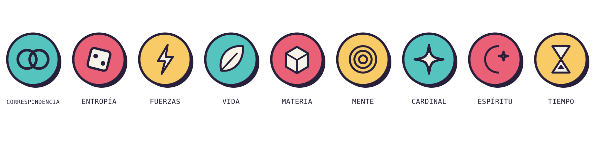
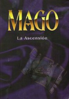

La marea detenida.
Una historia alternativa para Mago: La Ascensión, inspirada en las aventuras del archivo de Sinergia de Rol.

La hora que no pasó.
Todo lo que sube baja, decía mi abuela. Menos la marea de esta noche.
A las tres y doce minutos de la madrugada, el número de la pantalla dejó de cambiar.
Lía Ferreiro llevaba seis años de turnos de noche en la caseta del mareógrafo del puerto y sabía leer el mar como otras personas leen la cara de un amigo. Conocía el zumbido del sensor, el olor a gasóleo y algas, el parpadeo de los contenedores al otro lado de la dársena. Sabía que la marea de aquel 2 de noviembre tocaba pleamar a las 03:40. Por eso, cuando la cifra se quedó clavada en 3,412 metros y el gráfico se volvió una línea perfectamente horizontal, lo primero que pensó fue que se había roto el sensor.
Salió a mirar. El agua del puerto estaba lisa como una bandeja. En la bocana una ola grande, de las que llegan de mar abierto, se levantó, rompió contra el dique en un abanico blanco… y volvió a levantarse en el mismo sitio, con la misma forma y la misma espuma, como si alguien hubiera rebobinado la noche un palmo. Lía contó. Una vez. Dos. Siete.
Arriba, sobre la ciudad, el haz de la Torre de Hércules se había quedado quieto, apuntando hacia el norte, encendido sobre el agua como una espada de luz olvidada. La luna llena no se movía. Lía miró su reloj de pulsera: 03:12. Miró el móvil: 03:12. Respiró hondo, cerró los ojos, los abrió.
03:12.
Lo que Lía no sabía, porque nadie se lo había contado nunca, es que aquella noche no se había roto el mar, sino algo que estaba dentro de ella. Y que en algún lugar de la ciudad alguien llevaba meses esperando exactamente ese minuto.
La Capilla de la calle de la Franja.
Sabela Rey fue la primera en notarlo, porque tenía el oído hecho al compás. Estaba en el desván de la librería O Faro, que llevaba nueve años cerrada al público y que su cábala usaba como Capilla, afinando la pandereta para una sesión que nunca llegaría a empezar. Golpeó el parche, una, dos, tres veces, y el tercer golpe sonó antes que el segundo.
—Eso no ha pasado —dijo en voz alta.
Don Amaro Seoane levantó la vista de su cuaderno de cuero. Era notario jubilado, miembro de la Orden de Hermes desde antes de que Sabela naciera, y tenía la costumbre de corregir la gramática de los demás incluso en mitad de un ritual. Pero aquella vez no corrigió nada. Miró el reloj de pared, un trasto de péndulo que había heredado de su maestra, y vio el péndulo detenido en lo alto de su recorrido, temblando, sin decidirse a caer.
En el sofá, envuelta en una manta, Uxía Varela dejó la taza de té. La infusión había dejado de humear. No se había enfriado: simplemente el vapor estaba allí, suspendido en una voluta perfecta encima de la taza, como dibujado con tiza. Uxía era de la Verbena, curandera de oficio y de vocación, y su magia sabía a romero y a tierra mojada. Tocó el vapor con la punta del dedo y lo notó tibio, vivo, atrapado.
—Algo está reteniendo el Tiempo —dijo—. Y no somos nosotros.
Nico Barreiro ni siquiera levantó la cabeza. Tenía tres pantallas abiertas sobre la mesa de la cocina y los auriculares puestos. Adepto Virtual, veintiséis años, la clase de persona que pide perdón a las impresoras cuando las golpea. Tecleó algo, frunció el ceño y giró una pantalla hacia los demás: los relojes atómicos de referencia que consultaba por costumbre seguían avanzando, segundo a segundo, en Madrid, en Lisboa, en París. Los de A Coruña no.
—No es todo el mundo —dijo Nico—. Es la ciudad. O un trozo de la ciudad. Y está muy, muy quieta.
En la Capilla de la Franja nunca había habido jerarquía. Desde la caída de Horizonte, la gran fortaleza de las Tradiciones en el Otro Lado, las cábalas pequeñas como la suya habían quedado más o menos a su aire: sin maestros que mandaran, sin informes que enviar, con libertad y con miedo a partes iguales. Ellos cuatro se habían encontrado más por terquedad que por destino y se cuidaban como una familia mal avenida. Se reunían en el desván, entre cajas de novelas húmedas, porque el lugar estaba sobre un pequeño Nodo, una fuente de Quintaesencia que se notaba en el aire como se nota el mar antes de verlo.
Por eso les sorprendió tanto que alguien llamara a la puerta de la librería a las tres y doce de la madrugada.
Era Bieito Lamas. Abrigo gris gastado, bufanda de lana, una bolsa de churros todavía caliente, lo único caliente de la ciudad. Bieito era un Ser Hueco, uno de esos magos huérfanos de Tradición que se visten de luto como quien se pone una broma, y llevaba casi un año rondando por la Capilla. Traía libros que nadie le pedía, café cuando hacía falta y una manera de sonreír que hacía que todo el mundo se relajara. Sus ojos eran de un gris tan claro que, con poca luz, parecían de vidrio plateado.
—¿Lo habéis visto? —preguntó desde el umbral—. El faro. La luna. Esa ola del puerto que se repite como un vídeo de esos que se ponen en bucle.
—Lo estamos viviendo —dijo Sabela.
Bieito se sentó en la escalera, repartió los churros y contó lo que sabía. Llevaba semanas siguiendo «una resonancia rara» en el puerto. Había una mujer, técnica del mareógrafo, que tenía lo que él llamaba un Avatar «a punto de romper el cascarón». Lía Ferreiro. Durmiente todavía, pero por poco.
—Si Despierta sola, y Despierta con miedo —dijo, mirando a Uxía—, esta noche puede no terminar nunca. Para ella, quiero decir. Y para unas cuantas manzanas alrededor.
Uxía hizo la pregunta que nadie quería hacer.
—¿Y por qué nos lo cuentas a nosotros?
—Porque sois buena gente —respondió Bieito, encogiéndose de hombros—. Y porque los otros ya la están buscando.
No hizo falta preguntar quiénes eran «los otros». En una ciudad pequeña, cualquier mago de las Tradiciones aprende pronto a reconocer las furgonetas grises sin rotular, los técnicos que nunca parecen trabajar para nadie, los trajes demasiado bien planchados. La Tecnocracia no creía en la magia. Creía en las mediciones, en los protocolos y en la estabilidad. Y una mujer capaz de detener el mar era, para ellos, una anomalía estadística que había que corregir.
Salieron los cinco a la calle. La ciudad estaba en silencio, pero no en un silencio de madrugada: era el silencio de una fotografía. Un gato a medio salto sobre un contenedor. Un taxi con el intermitente encendido sin parpadear. Un hombre que volvía de una fiesta con la boca abierta en mitad de un bostezo. Los Durmientes estaban congelados en el minuto. Solo los magos, y quizá algunas otras criaturas que preferían no imaginar, se movían dentro de él.
—Esto es lo peor que le puede pasar al Consenso —murmuró don Amaro—. Si cuando todo se descongele hay mil personas que recuerdan haber vivido el mismo minuto setenta veces, la Paradoja no va a tener piedad de nadie.
—Entonces que no lo recuerden —dijo Nico, ya caminando hacia el puerto.
Anomalías estadísticas.
La furgoneta estaba aparcada junto a la caseta del mareógrafo, con las puertas traseras abiertas. Dentro, una pared de instrumentos parpadeaba con luces verdes. Era lo único en todo el puerto que se movía al ritmo normal del mundo, y eso ya decía mucho de la gente que la había traído.
La agente Carme Salgado los esperaba apoyada en el capó. Traje oscuro, pelo recogido, una carpeta bajo el brazo y la expresión de alguien que lleva toda la noche sin dormir y no piensa admitirlo. Dos técnicos con chaleco reflectante trabajaban dentro de la furgoneta sin mirar hacia afuera. Salgado no parecía sorprendida de verlos; parecía, como mucho, ligeramente decepcionada.
—Desviados —dijo, a modo de saludo—. Tendría que haberlo supuesto.
—Buenas noches a usted también —respondió don Amaro, con una inclinación de cabeza que era casi una provocación.
Salgado trabajaba para el Nuevo Orden Mundial, la Convención de la Tecnocracia que se ocupa de la información y de lo que la gente cree que es verdad. No llevaba gafas de sol, a pesar de la leyenda, pero tenía unas en el bolsillo de la chaqueta, y Nico juraría después que las había tocado un par de veces, como quien toca un amuleto.
La conversación que siguió fue tensa, educada y extrañamente útil. Para Salgado, lo que ocurría era un «evento de discontinuidad local» provocado por un individuo con un potencial de desviación altísimo: un Durmiente al borde de convertirse en algo que su Unión llamaba, con elegancia burocrática, un «sujeto de riesgo». Tenía el nombre de Lía en la carpeta. Tenía su dirección. Tenía hasta su historial médico.
—No vamos a hacerle daño —dijo Salgado, y por un momento sonó sincera—. La vamos a estabilizar. Un periodo de observación, terapia, un trabajo nuevo. Hay personas que viven toda su vida sin volver a tener un episodio así.
—Personas a las que les habéis quitado algo —replicó Uxía.
—Personas que duermen tranquilas —corrigió Salgado—. ¿Ustedes pueden prometerle lo mismo?
Nadie contestó. Esa era la parte incómoda de la Guerra de la Ascensión que nadie contaba en los libros: que a veces el otro bando también creía estar protegiendo a la gente. Para la Tecnocracia, el mundo sólo era seguro si todos compartían la misma realidad, medible y predecible. Para las Tradiciones, ese mundo seguro era también una jaula. Y Lía estaba, sin saberlo, exactamente en el borde entre las dos ideas.
Mientras tanto, Nico se había sentado en el bordillo con el portátil sobre las rodillas. Para él no hacía falta cable: un Adepto Virtual con suficiente práctica en Correspondencia podía colarse en la Telaraña Digital, el reflejo de la red que existe en el Otro Lado, y caminar por ella como por una ciudad de luz.
Lo que encontró allí le heló la sangre.
Los registros del mareógrafo, las cámaras del puerto, las antenas de telefonía, los relojes de los cajeros: todos los datos de aquel minuto formaban, vistos desde dentro, un laberinto circular. Anillos y anillos de información repetida, girando sobre sí mismos. Y en el centro, una presencia. No una persona exactamente, sino algo que se alimentaba de la repetición, que sorbía cada nueva vuelta del minuto como quien sorbe un caldo.
Nico siguió un hilo. Siempre hay un hilo. Un rastro fino de datos que no se repetía como los demás, sino que entraba y salía del laberinto como un hilo rojo en un tapiz. Llevaba a una cuenta de correo, a un pago en un rastro de antigüedades del domingo anterior, a una dirección de Monte Alto: el piso de Lía.
Y a un nombre en la factura de un puesto del rastro: B. Lamas.
Cuando Nico se quitó los auriculares, le temblaban las manos. Miró hacia la escalera del muelle, donde un momento antes Bieito estaba sentado comiendo el último churro. No había nadie.
—Tenemos que ir al piso de Lía —dijo—. Ya.
—Lía no está en su piso —dijo Salgado, sin levantar la vista de la carpeta—. Está en la caseta. Lleva ahí dentro todo el minuto.


Lía.
Un logro es encontrar un alma humana bella.
La caseta del mareógrafo olía a café recalentado. Lía estaba sentada en el suelo, con la espalda contra la pared y las rodillas abrazadas, mirando la pantalla con la cifra inmóvil. Cuando la puerta se abrió, levantó la cabeza y dijo, con una calma que daba miedo:
—Ya habéis entrado antes. Cuatro veces. Siempre decís lo mismo.
Uxía se detuvo en el umbral. Nadie en la cábala recordaba haber entrado antes. Pero Sabela, que sentía el Tiempo como un pulso en las muñecas, notó el roce de los otros intentos: cuatro versiones de ellos mismos que habían cruzado esa puerta, habían hablado demasiado rápido, habían asustado a Lía y habían sido borradas por la siguiente vuelta del minuto.
—Entonces esta vez vamos a decir otra cosa —contestó Uxía, y se sentó en el suelo a su lado.
No usó magia. Esa fue la primera decisión importante de la noche. Al otro lado de la ventana, los técnicos de Salgado seguían midiendo, y cualquier efecto vulgar, cualquier destello imposible delante de una Durmiente aterrorizada, podía romper algo que no tenía arreglo. Uxía sacó de la bolsa un termo, sirvió dos vasos de manzanilla con miel (el vapor se quedó quieto sobre los vasos, como en la Capilla) y habló de cosas pequeñas. De la abuela de Lía, que había sido farera en Fisterra. De las tablas de mareas que Lía rellenaba a mano por la noche, aunque el sistema las calculaba solo, porque le gustaba escribir los números con su letra.
—Las mareas tienen sentido —dijo Lía—. Siempre. Suben, bajan. Tienen horario. Por eso me gustan.
—¿Y qué pasó a las tres y doce?
Lía tardó en contestar.
—Me llamaron del hospital. Mi abuela. Se está muriendo. Yo pensé… pensé que si la marea no subía, no tenía que ir. Que si la noche no avanzaba, no tenía que llegar mañana. Y la marea me hizo caso.
Hubo un silencio. Don Amaro se quitó el sombrero.
Así funcionaba el Despertar, a veces. No con un rayo ni con una visión de un águila rompiendo los barrotes de una jaula, sino con un deseo tan fuerte que la realidad se dobla para no contradecirlo. El Avatar de Lía, esa chispa de conciencia que todo mago lleva dentro, había encontrado su forma en lo que ella más amaba: el ritmo exacto, previsible, del agua. Y lo había detenido para protegerla de la única cosa que no podía soportar.
Lía estaba haciendo magia sin saberlo. Magia de Tiempo, poderosa, sin control y sin paradigma: sin una historia que le explicara a la realidad por qué aquello podía pasar. Un mago entrenado justifica sus efectos dentro de un sistema de creencias, ya sea el ritual hermético, el código informático o el ritmo de un tambor. Lía no tenía nada de eso. Solo miedo y amor, mezclados.
Y había algo más. En el estante, junto a las tablas de mareas, había una caracola grande, amarilla, con una espiral roja que parecía moverse si la mirabas de reojo. Lía la había comprado el domingo anterior en el rastro, a un hombre muy amable de abrigo gris. «Para que oigas el mar cuando estés de guardia», le había dicho.
Don Amaro no la tocó. Se acercó con su cuaderno abierto y trazó en el aire, muy despacio, los signos de una invocación de Cardinal, la Esfera de la energía primordial que lo sostiene todo. Lo que vio le hizo palidecer: la caracola no era un simple adorno. Era un talismán. Absorbía la Quintaesencia que el Despertar de Lía liberaba con cada vuelta del minuto y la enviaba hacia fuera, hacia el norte, por un canal tan fino como un hilo.
—Hacia la Torre —dijo.
Uxía, que tenía la Esfera de Espíritu, sintió lo que había al otro lado del hilo. No era un espíritu del mar ni un fantasma del faro. Era un hambre. Un vacío con forma de boca.
—Nefandos —susurró.
Sabela soltó una palabrota que don Amaro, por una vez, no corrigió.
La otra cara.
Volvieron a la librería por las calles congeladas, con Lía envuelta en la manta de Uxía y la caracola en una caja de zapatos forrada de papel de plata, la mejor protección que Nico pudo improvisar. La agente Salgado los siguió a diez pasos, sin pedir permiso y sin ofrecer explicaciones. Nadie la echó.
Bieito estaba en el desván, sentado en el sofá de Uxía, hojeando el cuaderno de don Amaro.
—Os he hecho café —dijo—. Bueno, he hecho café una vez. Lleva ya cuarenta vueltas recién hecho.
Nadie se rió. Bieito suspiró, dejó el cuaderno y se puso de pie. Seguía teniendo la misma sonrisa amable, el mismo abrigo gris, la misma bufanda. Pero sus ojos, a la luz de la lámpara inmóvil, ya no parecían de vidrio: parecían agujeros a través de los cuales se veía otra cosa, muy lejos, muy oscura.
«La mejor manera de ganar una guerra es conseguir que tus enemigos se disparen entre ellos mientras te dan las gracias por el café.»
No hubo combate. Esa fue la segunda sorpresa de la noche. Bieito les explicó su plan con la tranquilidad de quien explica una receta, porque sabía que ya no podían detenerlo con prisas. Llevaba un año preparándolo. Había encontrado a Lía antes que nadie. Había sembrado en ella el miedo justo, la caracola justa, y había avisado a la cábala y, por un canal anónimo, a la Tecnocracia, para que se pelearan por ella. Cuanto más miedo tuviera Lía, más vueltas daría el minuto. Cuantas más vueltas, más Paradoja. Y cuando el minuto por fin se rompiera, toda esa deuda acumulada caería de golpe sobre el Nodo que dormía bajo la Torre de Hércules, el más antiguo de la costa. Se abriría una herida en el Tapiz. Y por la herida entraría lo que Bieito llevaba años esperando.
—No es nada personal —dijo—. Me caéis bien. De verdad. Pero lo que hay al otro lado me cae mejor.
Salgado había sacado una pistola en algún momento, sin que nadie la viera moverse. Bieito la miró con algo parecido al cariño.
—Agente. Si me dispara aquí, en un minuto que no avanza, ¿sabe usted dónde va a acabar la bala?
Y entonces simplemente no estuvo. No se marchó: dejó de estar en aquel minuto y apareció en otro, uno que solo él sabía encontrar. En el suelo, donde había estado de pie, quedó una tarjeta con letras escritas a mano:
Nos vemos en la Torre. Traed a la chica. O no la traigáis: el resultado es el mismo.

Lía había escuchado todo desde la escalera. Tenía las manos blancas de apretar la manta.
—Entonces es culpa mía —dijo—. Si yo dejo de tener miedo, se acaba.
—No es culpa tuya —respondió Uxía—. Pero sí está en tu mano. Que no es lo mismo.
Salgado guardó la pistola. Se quedó un rato mirando por la ventana, al haz inmóvil de la Torre, y después dijo algo que ninguno de ellos esperaba oír en boca de un agente de la Tecnocracia:
—La Unión tiene una prioridad por encima de cualquier otra. Los Nefandos no negocian, no se estabilizan y no se reeducan. Por esta noche, y solo por esta noche, trabajamos juntos. Mañana volveremos a ser lo que somos.
Don Amaro le tendió la mano. Ella dudó, y luego se la estrechó.
—Mañana —asintió él—. Que ya es mucho decir, dadas las circunstancias.

Contra marea.
Subieron a la Torre andando, porque los coches estaban detenidos en el minuto como juguetes. A medida que se acercaban, el aire se volvía denso, casi líquido, y cada paso costaba un poco más que el anterior. Alrededor del faro, el minuto no se repetía igual que en el resto de la ciudad: giraba. Las nubes daban vueltas sobre la linterna como el agua en un desagüe, y el haz de luz, congelado sobre el mar, temblaba igual que el péndulo de don Amaro.
Bieito los esperaba al pie de la Torre, junto a la rosa de los vientos de piedra. Detrás de él, el aire se había vuelto fino como papel de fumar. A través de él se veía algo que ninguno de ellos quiso mirar demasiado tiempo.
El plan de la cábala era sencillo, porque no había tiempo, literalmente, para uno complicado.
Nico se encargaría de la Telaraña. Con ayuda de los técnicos de Salgado, que enchufaron los sensores de la furgoneta a su portátil con una docilidad sorprendente, inundó el laberinto de datos con ruido: millones de minutos falsos, ligeramente distintos entre sí, para que la presencia del centro no pudiera seguir alimentándose de la repetición perfecta.
Sabela tocaría. No una canción, sino un compás: un golpe, otro, otro, cada vez un poco más rápido, para enseñarle a la realidad que el tiempo podía volver a avanzar sin romperse. Era magia coincidente, discreta: una mujer tocando la pandereta en un paseo marítimo de madrugada no le parecería extraño a ningún Durmiente que pudiera recordarlo.
Don Amaro se ocuparía de la caracola. Romperla a martillazos habría liberado de golpe toda la Quintaesencia robada, justo lo que Bieito quería. Así que la abrió como se abre un contrato: cláusula a cláusula, con Fuerzas y Cardinal, devolviendo cada hilo de energía a su sitio, a la ciudad, a las farolas, a la marea. Era un trabajo lento y preciso, y le costaba. A la tercera cláusula empezaron a salirle ampollas en las yemas de los dedos. A la quinta, le sangraba la nariz. La Paradoja cobraba su parte, como siempre, y siempre a quien estaba más cerca.
Y Uxía se quedó con Lía. Ese era el trabajo más difícil de todos.
—No te voy a pedir que dejes de tener miedo —le dijo, cogiéndole las manos—. Eso no se puede pedir. Te voy a pedir que dejes pasar el minuto aunque tengas miedo.
—Si lo dejo pasar, llega mañana.
—Sí.
—Y mañana mi abuela se muere.
—Puede que sí. Y si no vas, se muere igual, pero sin ti.
Bieito se rió, por primera vez sin amabilidad, y avanzó hacia ellas. Fue Salgado quien se interpuso. No disparó. Encendió una linterna de mano, una linterna corriente de las que se compran en una ferretería, y se la puso delante de los ojos, de esos ojos que ya no eran ojos. La luz entró por los agujeros hasta el otro lado, y lo que estaba al otro lado retrocedió. A veces, la ciencia más humilde es la que mejor funciona contra la oscuridad.
—Ahora —dijo Sabela, y aceleró el compás.
Lía cerró los ojos. Pensó en su abuela, la farera, que le había enseñado que el faro no sirve para detener la noche, sino para cruzarla. Pensó en los números que escribía a mano en las tablas, uno detrás de otro, sin saltarse ninguno. Pensó en el mar, que siempre sube y siempre baja, y por primera vez esa idea no le dio miedo, sino un poco de paz.
Y dejó que el minuto se fuera.
El haz de la Torre se movió. Primero un grado, luego otro, después giró completo, barriendo el mar, la ciudad, los tejados, la cara de cada uno de ellos. La ola de la bocana rompió y, esta vez, no volvió a levantarse. La luna se deslizó un dedo hacia el oeste. Las nubes que giraban sobre la linterna se deshicieron en una lluvia fina y normal, de las de noviembre.
Bieito trató de saltar a otro minuto, como había hecho en la librería. Pero ya no quedaba ninguno sobrante: el laberinto de Nico estaba lleno de ruido, el compás de Sabela no dejaba huecos y la caracola de don Amaro estaba vacía. El último minuto de Bieito fue el suyo propio, el que había estado alimentando durante un año. Se cerró sobre él como una concha. Cuando la lluvia limpió el aire, en la rosa de los vientos solo quedaba su bufanda.
Nadie supo nunca si había muerto, si había caído al otro lado o si seguía allí, atrapado para siempre en las tres y doce. Salgado lo anotó en su carpeta como «sujeto no localizado». Era, probablemente, lo más honesto que se podía escribir.
Pleamar.
La pleamar llegó a las 03:40, con veintiocho minutos de retraso sobre el horario que no había existido. Nadie en la ciudad recordaría la noche más que como un sueño raro, una de esas sensaciones de déjà vu de las que se habla en la radio de madrugada y se olvidan antes del desayuno. Nico se ocupó de que las cámaras, los registros y los relojes contaran una historia aburrida. Salgado se ocupó de lo mismo por su lado. Fue, quizá, la primera vez que las dos versiones oficiales de la realidad coincidieron punto por punto.
Lía llegó al hospital a las seis y media de la mañana, con el pelo mojado y la manta de Uxía todavía sobre los hombros. Llegó a tiempo.
Semanas después, cuando volvió a la caseta del mareógrafo, empezó a escribir las tablas de mareas de otra manera. Los números seguían ahí, exactos, uno detrás de otro, pero entre ellos había palabras: versos breves, nombres, pequeñas instrucciones para el mar. Uxía le explicó que eso, precisamente eso, era un paradigma. Su propia forma de contarle al mundo por qué las cosas pueden ser de otra manera. Don Amaro, con las manos todavía vendadas, le regaló un cuaderno de cuero.
En el buzón de la caseta apareció también una tarjeta blanca, sin logotipo, con un número de teléfono y una sola frase escrita a máquina: Si alguna vez prefieres datos a cuentos, llámame. C. S.
Lía guardó la tarjeta y el cuaderno en el mismo cajón. Todavía no ha decidido qué hacer con ninguno de los dos.
Y en los registros del mareógrafo, aunque Nico los revisó tres veces, sigue habiendo una línea que no termina de borrarse: 03:12, 3,412 metros. Una marea que, en algún lugar, todavía no ha bajado.
Fuentes e inspiración.
Esta historia es original. No reproduce escenas ni textos de ninguna aventura, pero bebe de varias ideas que encontramos al leer el archivo de módulos de Mago: La Ascensión conservado en el espejo de Sinergia de Rol. Así es como cada una dejó su huella:

- «Pasado, presente y futuro», de Keter el Ejecutor: la luna que no se mueve, el déjà vu que se oye en la radio y un mago que rompe el Tiempo por ambición. Aquí el Tiempo se rompe por amor y por miedo.
- «Pueblo maldito», de Keter el Ejecutor: el informante joven de abrigo gris y ojos de vidrio plateado que atrae a la cábala hacia el problema.
- «Transparencia», de Keter el Ejecutor: el talismán antiguo que pasa de mano en mano como un simple cachivache, y el epígrafe de Herder.
- «La concubina imperial», de Fabián Álvarez: los objetos con una maldición escondida y la intriga lenta de quien prepara un ritual durante años.
- «Malcom», de Daniel Meléndez: el Durmiente a punto de Despertar de forma devastadora, buscado a la vez por las Tradiciones y por la Tecnocracia.
- «Gritos inocentes», de Pablo Floriano Aya: la idea de un ritual que necesita víctimas inocentes para romper el espacio y el tiempo.
- «El olimpo de Hades», de Kaliber BG: el laberinto en la Telaraña Digital, el hilo de Ariadna y el escenario gallego.
- «Cielo o infierno», de Miguel Lupino: la ciudad aislada y el poder enorme que los magos sienten llegar sin poder detenerlo.
- «La otra cara de la moneda», de Juan Sixto: el Nefando que se hace pasar por amigo y lanza a sus enemigos unos contra otros, y la cábala pequeña y sin jerarquía que dejó la caída de Horizonte.
Referencias sobre el juego
- Mage: The Ascension. White Wolf Game Studio, 1993; edición revisada, 2000; Mage: The Ascension 20th Anniversary Edition, Onyx Path, 2015. En español, Mago: La Ascensión.
- «Mage: The Ascension», Wikipedia (en inglés): ediciones, facciones y Esferas. en.wikipedia.org/wiki/Mage:_The_Ascension
- «Mago: La Ascensión», Academia Lab: Consenso, Paradoja, Avatar, Tradiciones y Convenciones. academia-lab.com/enciclopedia/mago-la-ascension
- «Mage: The Ascension», reseña en Troynovant: lectura sobre la subjetividad, el Consenso y la Paradoja. troynovant.com/Kentauros/White-Wolf/Mage-The-Ascension.html

Una hora que no pasa. Una marea que no baja. Una mujer que todavía no sabe que es maga.
En A Coruña, a las 03:12 de la madrugada, el haz de la Torre de Hércules se queda quieto sobre el mar. Una pequeña cábala de las Tradiciones tiene hasta el amanecer para entender quién detuvo el tiempo y por qué alguien quiere que el Despertar de Lía Ferreiro sea una catástrofe.
Historia original y no oficial, escrita a partir de la lectura de las aventuras de Mago: La Ascensión conservadas en el archivo de Sinergia de Rol y de referencias públicas sobre el juego.